Префектура Оита · Саики · еда
Рыба Саики: ставрида без соевого соуса, камбала с кабосу и рыбная паста гомадаси
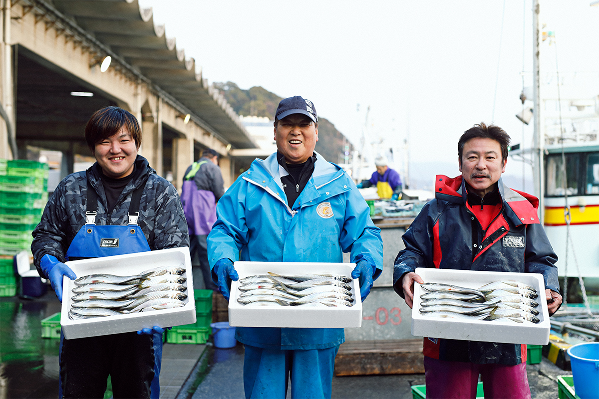
Саики, самый большой по площади город Кюсю, лежит на юго-востоке префектуры Оита, у пролива Бунго. Рыбу здесь ловят со времён, когда ещё не было эпохи Эдо, и по прибрежному улову город входит в число лидеров Кюсю. Мы прошли за рыбой Саики весь путь: от моря и рынка до цеха, фермы и тарелки.
Море
«Князь Саики держится на бухтах»
Береговая линия Саики тянется примерно на 270 километров, и рыбаки работают вдоль неё уже несколько веков. Рыбу отсюда высоко ценят на токийском рынке Тоёсу, куда каждый день свозят морепродукты со всего мира, а сам город славится как центр рыболовства, разведения рыбы и рыбной переработки.
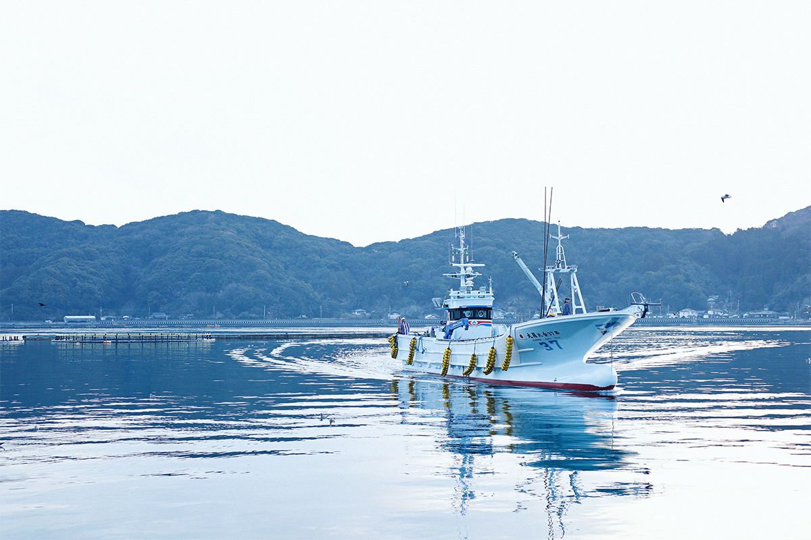
В эпоху Эдо о княжестве Саики говорили: «Князь Саики держится на бухтах». Бухтами, «ура», здесь называют прибрежные поселения, и выходит, что казну княжества наполняло не только земледелие, но и рыбный промысел. Так сложилось из-за природы. С суши Саики окружают горы природного парка Собо-Катамуки, на востоке тянется один из самых изрезанных берегов риасового типа в Японии, а чистая река Бандзё несёт из лесов в море питательные вещества. Поэтому у берега собирается так много живности.
Такамаса Мори (1559–1628), основатель княжества Саики, ради охраны моря первым в Японии издал указ, который ограничивал вырубку горных лесов, и его примеру последовали другие княжества. Эта забота о море жива и сегодня. В Саики сохраняют защитные леса «уоцуки-рин»: их оставляют на побережье, чтобы рыбе было где кормиться и нереститься.
Рынок
Рассвет на рынке Цуруми
Ранним утром, когда над мысом Цуруми-саки встаёт солнце и небо только начинает светлеть, мы приехали на рынок Цуруми. Это муниципальный оптовый рыбный рынок, главный для всего рыболовства Саики. Сюда свозят дневной улов из соседних рыболовных угодий: Цуруми, Ёноцу, Камиуры и Камаэ.
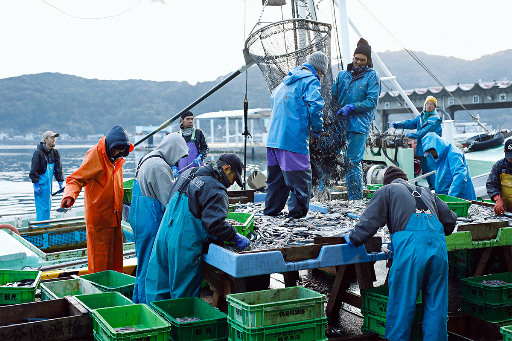
У причала из сетей вернувшихся судов прямо на берег льётся ставрида, и рыбаки быстро и сосредоточенно её сортируют. Около 6:45 начинаются торги живой рыбой, и зал оживает ещё больше.
В торговом зале рядами лежат весенние морепродукты всех цветов. Ставрида и скумбрия, белый амадай, тигровый и серебристый фугу, каракатица: каждый день здесь бывает около 100 видов, а за год больше 350.
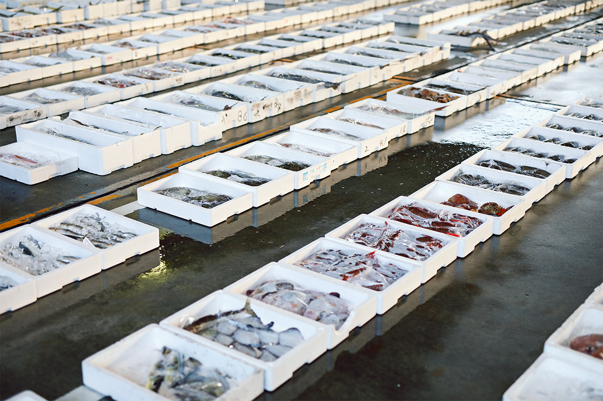
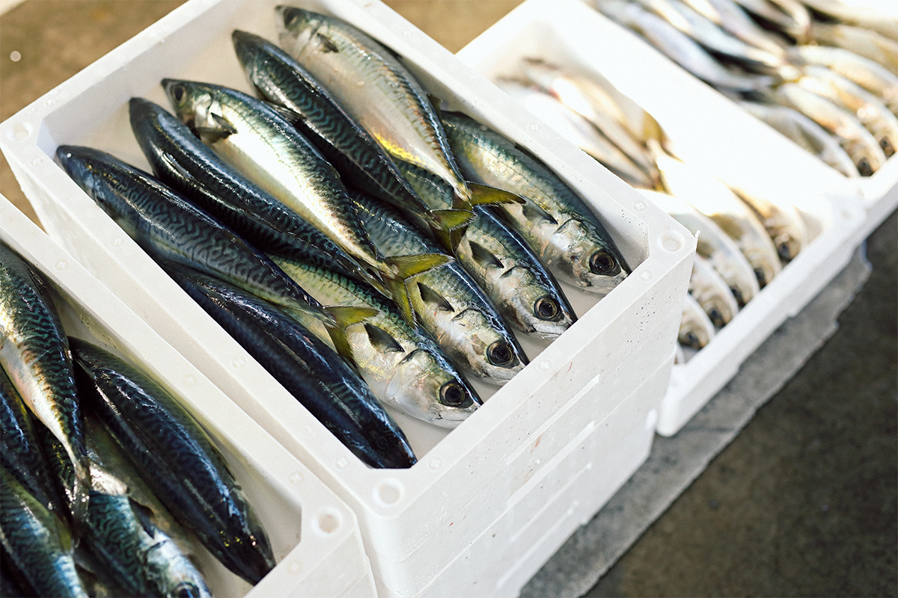
Председатель рыболовного комитета района Цуруми в кооперативе префектуры объясняет, почему здесь столько рыбы.
«В проливе Бунго, на который выходит Саики, смешиваются тёплая вода Тихого океана и холодная вода Внутреннего Японского моря, и в ней разводится очень много планктона. За планктоном приходит мелкая рыба, а за ней крупная, мадай и желтохвост. Поэтому у берегов Саики так хорошо ловится самая разная рыба»
председатель рыболовного комитета района Цуруми
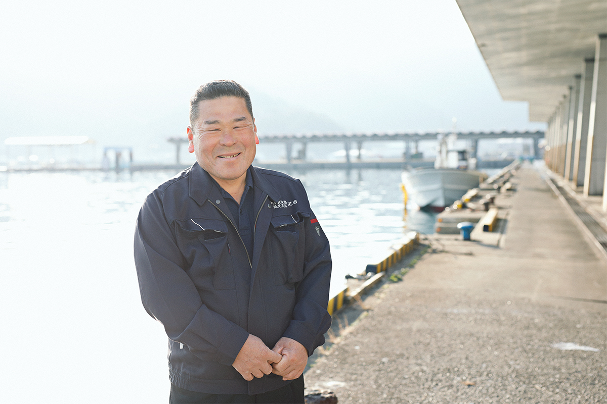
Рыболовные угодья лежат в нескольких часах хода от рынка, поэтому сюда поступает рыба редкого для Японии разнообразия, и отправляют её покупателям совсем свежей. К тому же здесь в ходу почти все способы лова: кошельковый невод, ставные сети, малый донный трал, ловля на удочку, жаберные сети и ныряние. Поэтому улов стабилен круглый год, и через рынок проходит около 20 000 тонн рыбы в год, примерно 70% всех рыбных рынков префектуры.
Ставрида
Сладкая без соевого соуса
Больше всего здесь вылавливают трёх «синих» рыб, самых простых и самых любимых в Японии: ставриду, скумбрию и сардину. Самая знаменитая из них ставрида Саики.
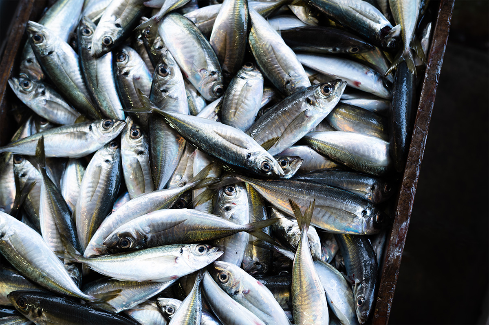
«Угодья у Саики большие, и благодаря кошельковому неводу, ставным сетям и ловле на удочку свежая ставрида есть у нас круглый год. Почти вся она из породы ки-адзи, самой вкусной среди ставрид. Она растёт в проливе Бунго, где сильные течения, поэтому мясо плотное. А держится она у подводных скал, где много корма, и жира в ней тоже много. Ставриду Саики с золотым отливом можно есть даже без соевого соуса: у неё свой сладкий вкус»
председатель рыболовного комитета района Цуруми
Ставриду здесь различают по размеру, и для каждой есть своё блюдо. Большая ставрида длиной от 30 до 50 сантиметров тает во рту, у неё яркий вкус жира и сладость, её берут для суши и сасими, а хорошая рыба стоит дороже морского леща. Средняя годится на всё, от сасими до жарки в панировке. Маленькую называют «дзэнго»: её маринуют в уксусе целиком, с головой, и это блюдо, «мару-дзуси», в Саики очень любят.
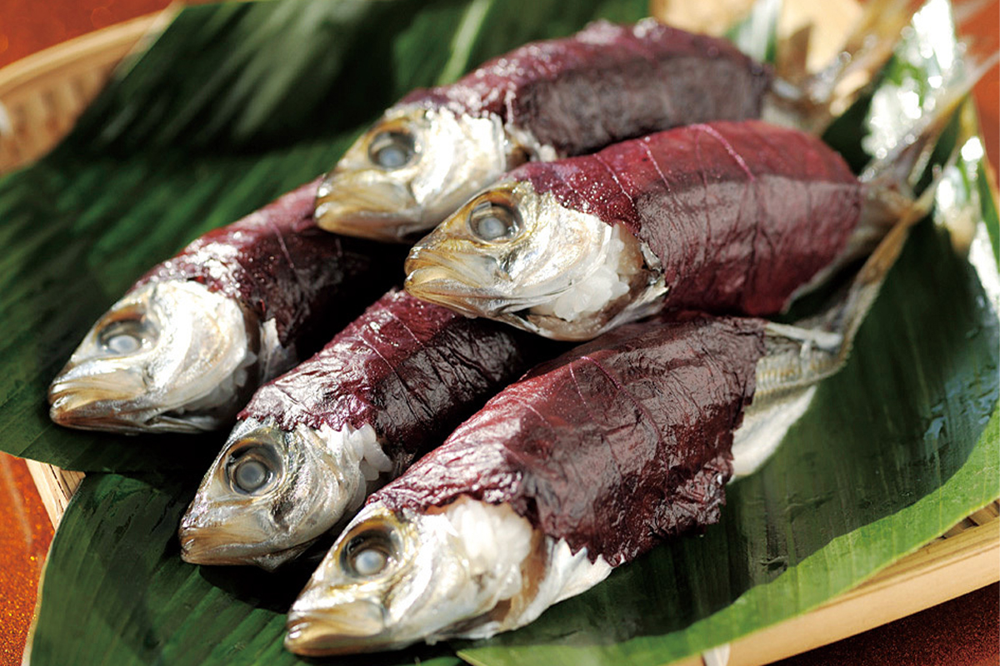
Свежесть ставриды, особенно крупной, объясняется не только тем, что улов быстро уходит покупателям. Большую роль играет синкэй-дзимэ, особый способ забоя живой рыбы: сначала рыбе разрушают мозг, чтобы она перестала двигаться, затем надрезают жабры и выпускают кровь, а потом проводят проволоку вдоль спинного мозга.
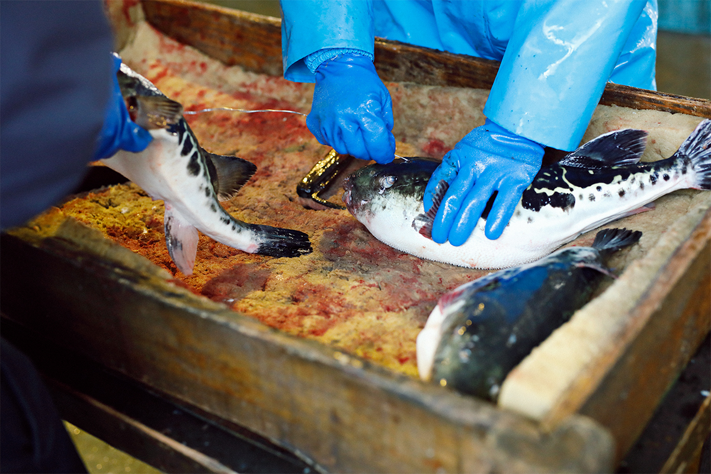
Такой способ не только сохраняет свежесть. Рыба почти не испытывает стресса, и, по данным исследований, инозиновой кислоты, отвечающей за вкус умами, в ней примерно вдвое больше, чем в рыбе, которую просто кладут в ледяную воду. Благодаря этому мастерству повара и оптовики по всей Японии и доверяют рыбе из Саики.
Переработка
Остановить время свежести
Высокий уровень рыбного дела в Саики виден и в переработке. От рынка Цуруми полчаса на машине на юг вдоль моря, и вы в Ёноцу. Здесь работают 15 рыбоперерабатывающих компаний. Одна из них, «Ямаро Ватанабэ», основанная в 1908 году, с самого начала берёт только свежее сырьё, прежде всего рыбу Саики.
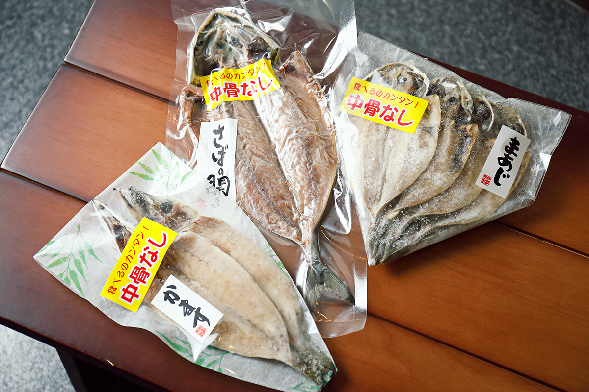
«Угодья Саики одни из лучших в Японии. Море даёт нам великолепные дары, и задача переработчиков в том, чтобы поднять цену рыбы, тогда рыбаки смогут продолжать своё дело»
глава «Ямаро Ватанабэ» в третьем поколении
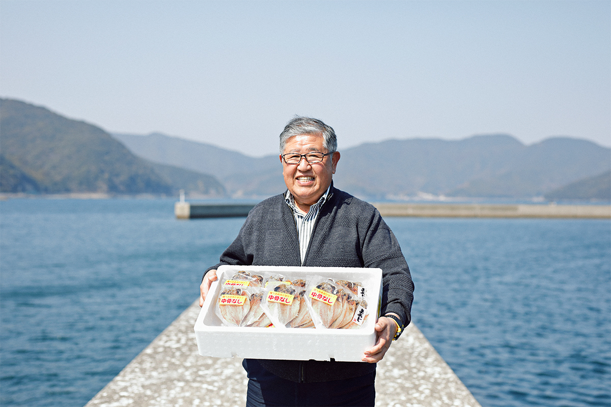
Уже около 40 лет целую и распластанную сушёную рыбу здесь делают без добавок, только с солью, чтобы раскрыть собственный вкус рыбы. Когда японцы привыкли покупать продукты в супермаркетах самообслуживания, компания одной из первых стала замораживать сасими в спиртовом рассоле. Жидкий спирт охлаждают до минус 33 градусов и опускают в него сасими: волокна мяса не разрушаются, и время свежести как будто останавливается.
Ещё здесь придумали распластанную рыбу без хребта, которую можно просто поджарить на сковороде. Около 30 видов продукции «Ямаро Ватанабэ» берут известные рестораны токийского района Аояма и сеть доставки органических продуктов без добавок, которая работает по всей стране.
«Я с детства рос на рыбе Саики и должен сохранить рыбную культуру, которую создали те, кто был до нас. Вместе с рыбаками и через дары пролива Бунго я хочу сделать японский стол богаче»
глава «Ямаро Ватанабэ» в третьем поколении
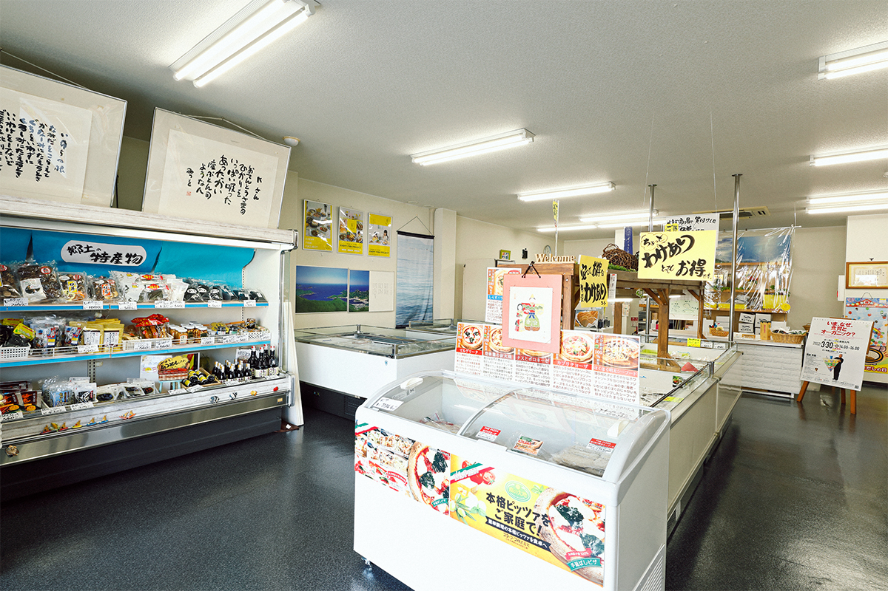
Мы приехали в Саики ранней весной, но рыба здесь хороша в любое время года. Вот когда в Саики лучше всего ловится дикая рыба:
- весна: мадай, ставрида, солнечник (здесь его зовут «мондай»), морской ёж;
- лето: исаки (местное название «хансако»), ставрида, щука-угорь хамо, аю;
- осень: лангуст, рыба-сабля, мадай, кальмар;
- зима: желтохвост, камбала хирамэ и камбала карэй;
- круглый год: морское ушко и сазаэ.
«Цуруми сёкухинкан» («Ямаро Ватанабэ»)
- Адрес
- префектура Оита, Саики, Цуруми, Дзимацуура, 1059-1
- Телефон
- +81 972-33-1056
- Часы работы
- 8:00–16:30
- Выходные
- вторник
Ферма
«Кабосу-хирамэ»: камбала с ароматом цитруса
Рыбу в Саики не только ловят, но и разводят. Началось это в 1961 году. Берег здесь изрезан, тихих бухт много, а вода даже зимой не остывает ниже 12 градусов. Первым стали разводить молодого желтохвоста, потом рыбные фермы появились во всех заливах Саики, и сегодня здесь растят камбалу хирамэ, желтохвоста, мадай, амберджека, ставриду сима-адзи, тигрового фугу и другую рыбу.
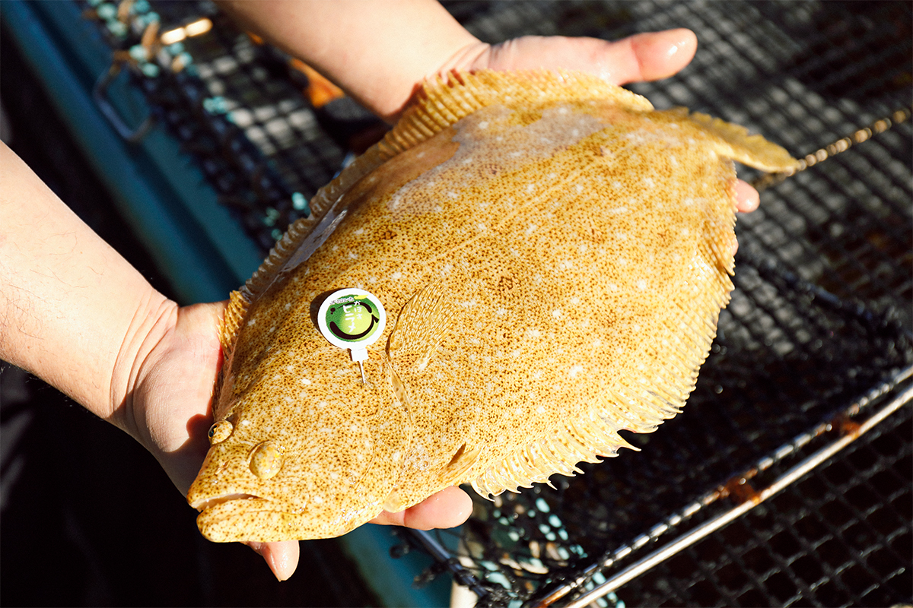
Больше всего Саики славится камбалой, выращенной в бассейнах на суше: по её производству город первый в Японии. Больше всего такой камбалы дают в районе Симо-Нюцу, и именно здесь в 2011 году появилась новая марка рыбы, «кабосу-хирамэ». В ней соединили два японских рекорда: префектура Оита первая в стране и по кабосу, кислому цитрусу, который здесь добавляют почти ко всему.
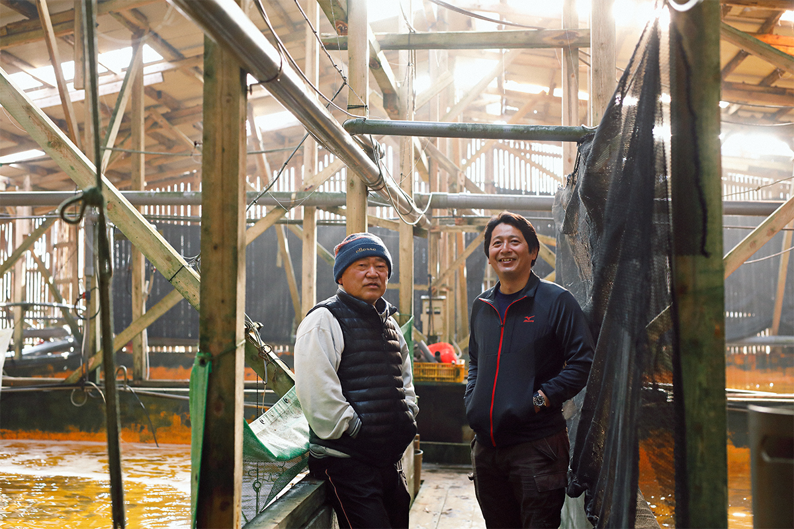
«Марку придумали сами производители. Начинали с нуля, вместе с префектурой, городом и рыболовецким кооперативом два года подбирали корм, состав и размер рыбы»
производитель «кабосу-хирамэ», отвечающий за рекламу объединения
В первый год заказали всего несколько сотен рыб в год. Но марку терпеливо продвигали, вкус с каждым годом становился лучше, и о камбале заговорили: в 2022 году она уже была одной из самых популярных рыбных марок Оиты.
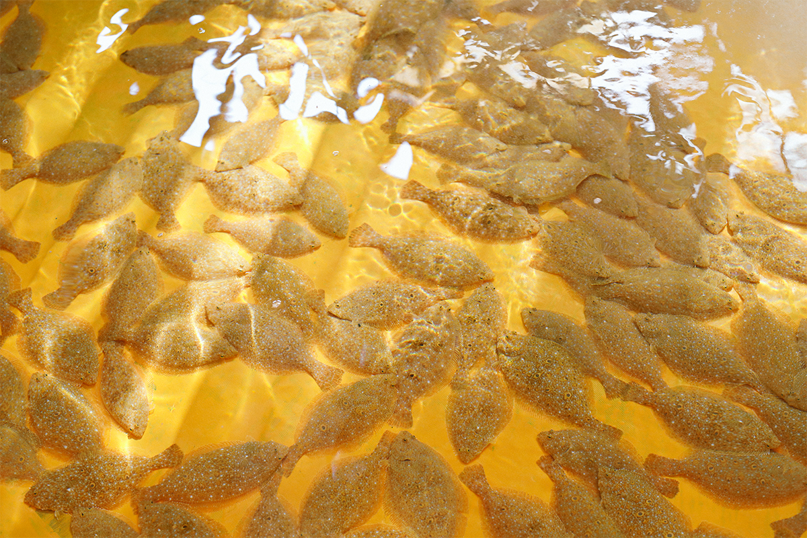
Камбалу в Саики растят в «хирамэ-гоя», низких одноэтажных сараях. Каждый день производители проверяют состояние рыбы, кормят её, меняют воду, сортируют и чистят бассейны. От малька до товарного размера проходит около года.
«Каждую рыбу проверяет производитель, потом её осматривает кооператив, и только после этого на неё ставят метку „кабосу-хирамэ“. Отгружаем круглый год. Вся история выращивания записана, поэтому мы можем отвечать не только за качество, но и за безопасность, а это для нас главное»
председатель объединения производителей «кабосу-хирамэ»
По правилам марки рыба должна весить около килограмма, и определённое время её кормят кормом с добавкой кабосу. Лимонен, вещество, которое даёт кабосу аромат, накапливается в печени и в «энгаве», мышцах у основания плавников, и от этого у камбалы появляется свой вкус.
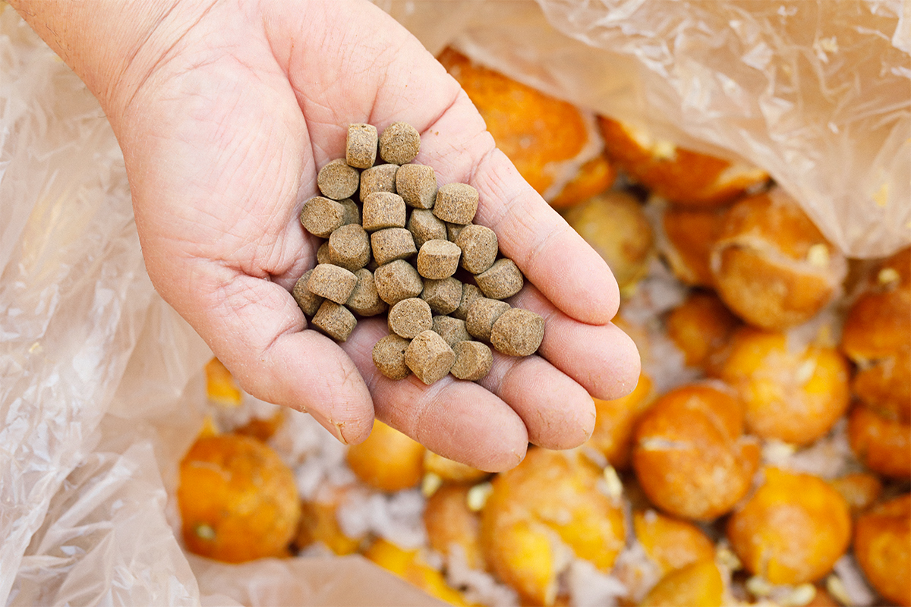
Попробовать «кабосу-хирамэ» мы поехали в Камаэ, на придорожную станцию «Камаэ» Buri Laboratory. Нам подали её сугата-дзукури: сасими, разложенные на целой рыбе. Прозрачное мясо в меру плотное, у него чистый и тонкий вкус. Энгава без лишнего жира и оттого ещё насыщеннее, а печень совсем без резкого привкуса. У обычной камбалы такого вкуса нет, и понятно, почему эту рыбу так любят.
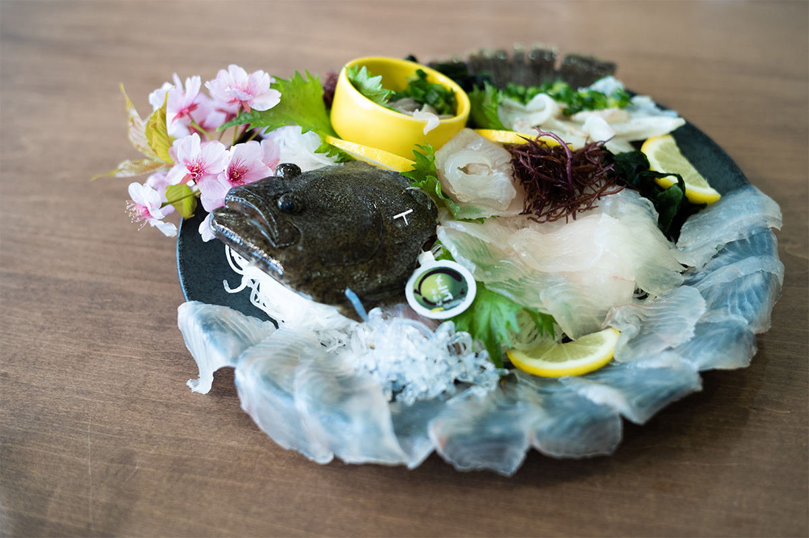
Придорожная станция «Камаэ» Buri Laboratory
- Адрес
- префектура Оита, Саики, Камаэ, Камаэура, 5104-1
- Телефон
- +81 972-42-0050
- Часы работы
- 10:00–16:00 (апрель–ноябрь), 10:00–15:00 (декабрь–март)
- Выходные
- среда
- Сайт
- buri.fish
Суси
Город суши у пролива Бунго
Лучше всего рыбу Саики, и дикую, и выращенную, раскрывают суши. В 2022 году 14 суши-ресторанов города входили в объединение «Суши-тракт Саики», и каждый по-своему готовил то, что в этот сезон даёт пролив Бунго. У каждого ресторана свой характер, поэтому ради местных суши в Саики приезжают туристы из других префектур и рыболовы, и многие возвращаются снова.
Гомадаси
Рыбная паста, которой больше ста лет
Рыбу Саики едят не только в суши. Есть ещё местное блюдо, которое знают немногие: гомадаси-удон. Гомадаси это приправа в виде пасты: запечённое мясо белой рыбы, чаще всего эсо (ящероголов), разминают и смешивают с мирином, соевым соусом и большим количеством кунжута.
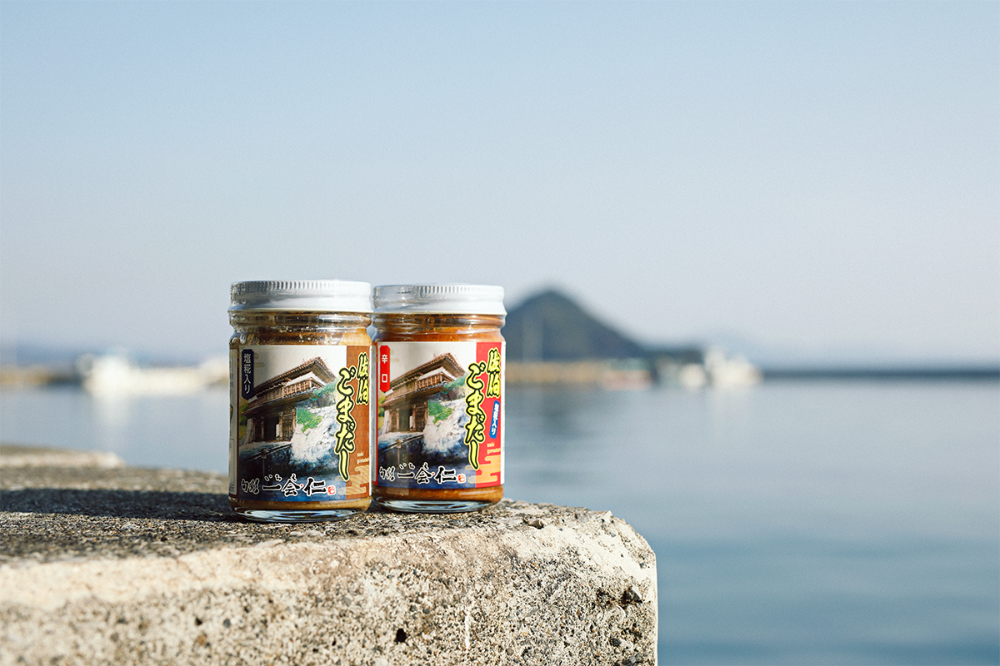
В марте 2022 года гомадаси Саики вошла в программу «Еда на сто лет», которую Агентство по делам культуры Японии создало, чтобы сохранять местные пищевые традиции. Так что это признанная часть кулинарного наследия города.
«Эсо уже больше ста лет идёт в основном на переработку: в ней много мелких костей, на сасими она не годится. Поэтому, говорят, рыбацкие семьи и делали из неё гомадаси, чтобы рыба дольше хранилась»
хозяин ICHIE
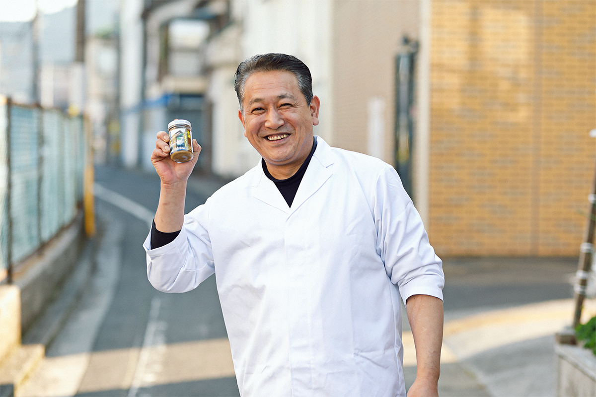
ICHIE специализируется на гомадаси-удоне и стоит в пяти минутах на машине от станции Саики. Гомадаси на век опередила нынешние разговоры об устойчивом развитии: из рыбы, которую иначе было бы трудно использовать, делали запас впрок. Её до сих пор готовят дома и передают от бабушки к матери, от матери к детям. Сам гомадаси-удон очень прост: на сваренную лапшу удон кладут что нравится и ложку гомадаси, а потом заливают кипятком.
Если хорошо перемешать, поднимается аромат рыбного бульона и жареного кунжута, и вкус получается мягкий и успокаивающий. В ICHIE в пасту добавляют ещё сио-кодзи, солёную рисовую закваску, и вкус становится мягче. Вместе со сладко-солёными сушёными грибами шиитаке «Умами-дакэ» из Оиты такую миску съедаешь в один присест.
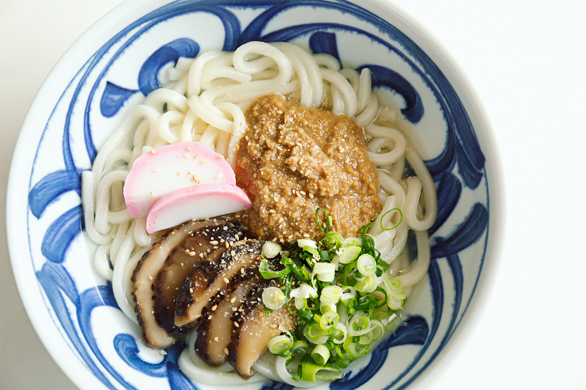
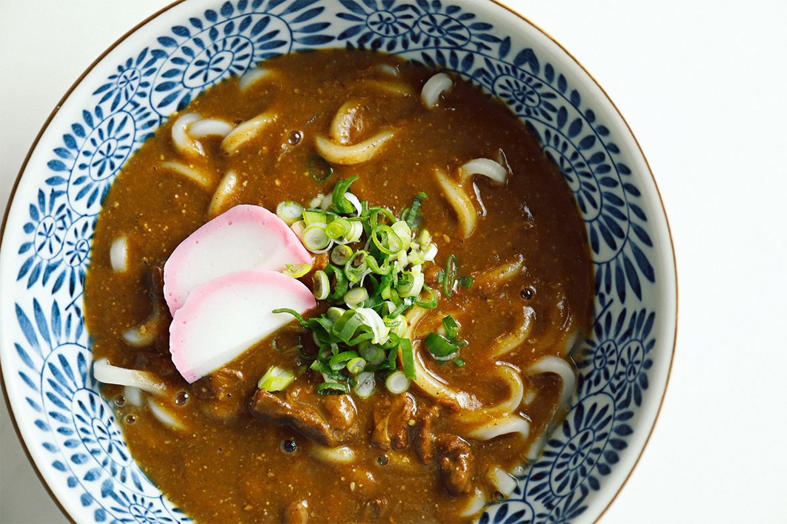
Раз в гомадаси есть рыбный бульон, сегодня её кладут не только в удон, но и в блюда из яиц, жаркое, мясо и овощи: это универсальная приправа. В Саики работает объединение «Саики гомадаси норэнкай», в которое входят заведения, делающие гомадаси только из местной рыбы. В 2022 году в нём было 18 ресторанов и магазинов, и у каждого свой вкус, так что баночка гомадаси из Саики станет хорошим подарком из поездки.
ICHIE
- Адрес
- префектура Оита, Саики, Мукаисима, 2-23-20
- Телефон
- +81 972-48-9133
- Часы работы
- 11:00–14:00, 17:00–22:00; в воскресенье и праздники 11:00–14:00
- Выходные
- понедельник
- Сайт
- visit-saiki.jp
Море, которое берегут уже 400 лет, рыбаки, оптовики, переработчики, фермеры и повара, каждый со своим мастерством: из всего этого и складывается рыбная кухня Саики. А по-настоящему её понимаешь только на месте.
Фото: Норихито Судзуки, Роберт Иппэй.